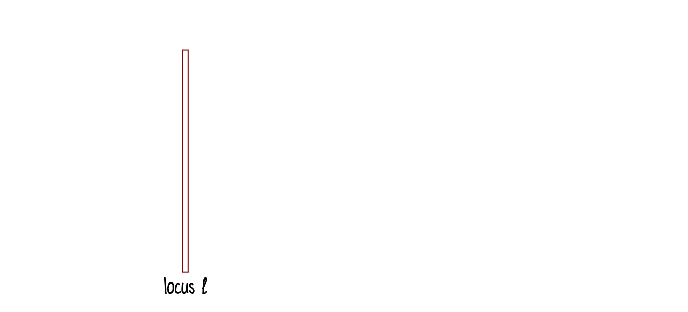
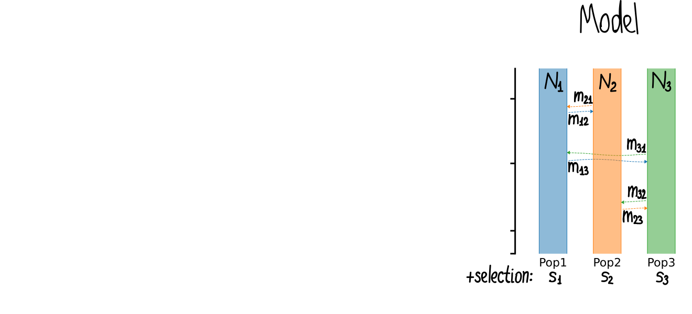
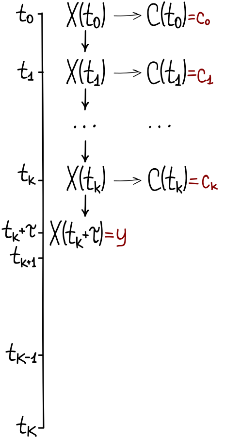
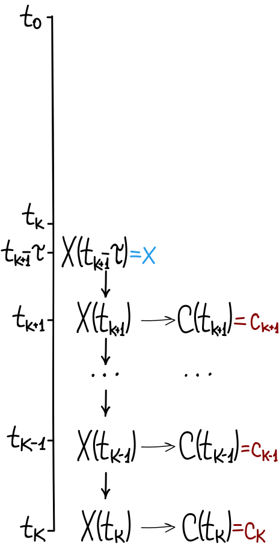

Data and Model
Data and Model


Find $\theta^\star: P(Data \big|\, \theta) \to \max$, where $\theta=(N_p, m_{pq}, s_p)$
Wright-Fisher Diffusion
Wright-Fisher Diffusion
- Two alleles in considered locus: $A$ and $a$
- X(t) — the rel. frequency of allele $A$ in populations at generation $t$
- Wright-Fisher model: $X(t)$ — Markov chain
- If $N \to \infty$ then $X(t)$ $\to$ Markov process
- Consider transition probability density $p(\tau, x, y)$ to go from state $x$ to state $y$ in time step of $\tau$
Wright-Fisher Diffusion
- Consider transition probability density $p(\tau, x, y)$ to go from state $x$ to state $y$ in time step of $\tau$
-
then $p(\tau, x, y)$ satisfies Kolmogorov forward equation:
$$\frac{\partial}{\partial \tau}p(\tau, x, y) = \frac{1}{2}\sum_{p=1}^P \frac{\partial^2}{{\partial y_p}^2} \left[b_{pp}(y)p(\tau, x, y)\right] - \sum_{p=1}^P \frac{\partial}{\partial y_p} \left[a_p(y) p(\tau, x, y)\right]$$ -
and $p(\tau, x, y)$ satisfies Kolmogorov backward equation:
$$\frac{\partial}{\partial \tau}p(\tau, x, y) = \frac{1}{2}\sum_{p=1}^P b_{pp}(x) \frac{\partial^2}{\partial {x_p}^2}\left[p(\tau, x, y)\right] + \sum_{p=1}^P a_p(x) \frac{\partial}{\partial x_p} \left[p(\tau, x, y)\right]$$where $a_p(x)$ and $b_{pp}(x)$ — infinitesimal mean and variance
Wright-Fisher Diffusion
Hidden Markov Model
Hidden Markov Model
The pair $(X(t), C(t))$ is a hidden Markov model if:
- $X(t)$ is a Markov process that is considered to be hidden
- $C(t)$ is observable process whose outcomes are "influenced" by the outcomes of $X$ in a known way
-
Outcome $C(t_k)$ is "influenced" exclusively by the outcome $X(t_k)$:
$$P(C_k = c \,|\, X_1=x_1, \ldots, X_k=x_k) = P(C_k = c \,|\, X_k=x_k)$$
$P(C(t_k) = c \, |\, X(t_k)=x_k)$ is called emission probability
Goal: learn about $X(t)$ by observing $C(t)$
Hidden Markov Model


Hidden Diffusion Model
Hidden Diffusion Model


Forward and Backward Recursion
Forward Recursion
Consider:
$$\alpha_k(\tau,y) := P\left[ X(t_k+\tau)=y, C(t_0)=c_0, \ldots, C(t_k)=c_k \right]$$The $\alpha_k$ satisfy the forward recursion:
$$\alpha_k(\tau,y) = \int \alpha_{k-1}(\Delta t_{k-1},x) \mathcal{B}(c_k | x) p(\tau,x,y) \,dx,$$Note:
$$P\left[C(t_0) = c_0,\ldots, C(t_K)=c_K\right] = \int \alpha_{K}(0,y) \,dy$$

Forward Recursion
The $\alpha_k$ satisfy the forward recursion:
$$\alpha_k(\tau,y) = \int \alpha_{k-1}(\Delta t_{k-1},x) \mathcal{B}(c_k | x) p(\tau,x,y) \,dx,$$Transition probability density $p(\tau, x, y)$ satisfies Kolmogorov forward equation:
$$\frac{\partial}{\partial \tau}p(\tau, x, y) = \frac{1}{2}\sum_{p=1}^P \frac{\partial^2}{{\partial y_p}^2} \left[b_{pp}(y)p(\tau, x, y)\right] - \sum_{p=1}^P \frac{\partial}{\partial y_p} \left[a_p(y) p(\tau, x, y)\right]$$Hence, $\alpha_k$ satisfies Kolmogorov forward equation:
$$\frac{\partial}{\partial \tau}\alpha_k(\tau, y) = \frac{1}{2}\sum_{p=1}^P \frac{\partial^2}{{\partial y_p}^2} \left[b_{pp}(y)\alpha_k(\tau, y)\right] - \sum_{p=1}^P \frac{\partial}{\partial y_p} \left[a_p(y) \alpha_k(\tau, y)\right]$$Backward Recursion
Consider:
$$\beta_k(\tau,x) := P\left[ C(t_{k+1})=c_{k+1}, \ldots, C(t_K)=c_K \big| X(t_{k+1}-\tau)=x \right]$$The $\beta_k$ satisfy the backward recursion:
$$\beta_k(\tau,x) = \int p(\tau,x,y) \mathcal{B}(c_{k+1} | y) \beta_{k+1}(\Delta t_{k+1},y) \, dy,$$where $\Delta t_{k+1}=t_{k+2} - t_{k+1}$ and $\mathcal{B}(c_k | x)$ — emission probability.
Note:
$$P\left[C(t_0) = c_0,\ldots, C(t_K)=c_K\right] = \int \beta_{-1}(0,x) \,dx$$

Backward Recursion
The $\beta_k$ satisfy the backward recursion:
$$\beta_k(\tau,x) = \int p(\tau,x,y) \mathcal{B}(c_{k+1} | y) \beta_{k+1}(\Delta t_{k+1},y) \, dy,$$Transition probability density $p(\tau, x, y)$ satisfies Kolmogorov backward equation:
$$\frac{\partial}{\partial \tau}p(\tau, x, y) = \frac{1}{2}\sum_{p=1}^P b_{pp}(x) \frac{\partial^2}{\partial {x_p}^2}\left[p(\tau, x, y)\right] + \sum_{p=1}^P a_p(x) \frac{\partial}{\partial x_p} \left[p(\tau, x, y)\right]$$Hence, $\beta_k$ satisfies Kolmogorov backward equation:
$$\frac{\partial}{\partial \tau}\beta_k(\tau, x) = \frac{1}{2}\sum_{p=1}^P b_{pp}(x) \frac{\partial^2}{\partial {x_p}^2}\left[\beta_k(\tau, x)\right] + \sum_{p=1}^P a_p(x) \frac{\partial}{\partial x_p} \left[\beta_k(\tau, x)\right]$$Approach Overview
Approach Overview
Approach Overview
: Mean and Variance
We consider population sizes $2N_p$, migration rates $m_{pq} \in [0,1]$ and fitness coefficients:
$$w_{AA} = 1 + s_q, \quad w_{Aa} = 1 + h s_q, \quad w_{aa} = 1.$$If $X(t)=x$, then mean $X(t+1)$ can be expressed:
$$x_p' = \sum\limits_{q=1}^I m_{qp}\frac{w_{AA}x_q^2+w_{Aa}x_q(1-x_q)}{w_{AA}x_q^2+2w_{Aa}x_q(1-x_q)+w_{aa}(1-x_q)^2}$$We allow the two alleles $A$ and $a$ to mutate into each other:
$$x_i'' = x_i' + \mu_{a \to A} (1 - x_i') - \mu_{A \to a} x_i'$$Then infinitesimal mean and variance:
$$a_p(x) = x_p''-x_p$$ $$b_{pp}(x) = \frac{x_p(1-x_p)}{2N_p}$$Approach Overview
: Forward
In order to compute $P\left(\{c_k\}_{k=0}^K \big| \theta\right)$ in condition of hidden Wright-Fisher model with parameters $\theta=[N_p, m_{pq}, s_p]_{p,q=1,..,P}$:
- Build infinitesimal mean $a_p(x)$ and variance $b_{pp}(x)$ according to $\theta$
-
For each $k=1,\ldots,K-1$ do:
-
Obtain $\alpha_k(t_{k+1} - t_k,y)$ by solving forward equation:
$$\frac{\partial}{\partial \tau}\alpha_k(\tau, y) = \frac{1}{2}\sum_{p=1}^P \frac{\partial^2}{{\partial y_p}^2} \left[b_{pp}(y)\alpha_k(\tau, y)\right] - \sum_{p=1}^P \frac{\partial}{\partial y_p} \left[a_p(y) \alpha_k(\tau, y)\right]$$ $$\text{subject to: }\alpha_k(0, y) = \alpha_{k-1}(t_{k} - t_{k-1}, y) \mathcal{B}(c_{k} | y)$$
-
-
Evaluate:
$$P\left[C(t_0) = c_0,\ldots, C(t_K)=c_K \, \big| \, \theta\right] = \int \alpha_{K}(0,y) \,dy$$
Approach Overview
: Backward
In order to compute $P\left(\{c_k\}_{k=0}^K \big| \theta\right)$ in condition of hidden Wright-Fisher model with parameters $\theta=[N_p, m_{pq}, s_p]_{p,q=1,..,P}$:
- Build infinitesimal mean $a_p(x)$ and variance $b_{pp}(x)$ according to $\theta$
-
For each $k=K-1,\ldots,0$ do:
-
Obtain $\beta_k(t_{k+1} - t_k,x)$ by solving backward equation:
$$\frac{\partial}{\partial \tau}\beta_k(\tau, x) = \frac{1}{2}\sum_{p=1}^P b_{pp}(x) \frac{\partial^2}{\partial {x_p}^2}\left[\beta_k(\tau, x)\right] + \sum_{p=1}^P a_p(x) \frac{\partial}{\partial x_p} \left[\beta_k(\tau, x)\right]$$ $$\text{subject to: }\beta_k(0, x) = \beta_{k+1}(t_{k+2} - t_{k+1}, x)\mathcal{B}(c_{k+1} | x)$$
-
-
Evaluate:
$$P\left[C(t_0) = c_0,\ldots, C(t_K)=c_K \, \big| \, \theta\right] = \int \beta_{0}(\Delta t_0,x)\mathcal{B}(c_{0} | x) \,dx$$
Approach Overview
: Reflecting Boundaries
We propose reflecting boundary conditions for both forward and backward equations
-
Forward equation
$$\frac{\partial}{\partial \tau}\alpha(\tau, y) = \frac{1}{2}\sum_{p=1}^P \frac{\partial^2}{{\partial y_p}^2} \left[b_{pp}(y)\alpha(\tau, y)\right] - \sum_{p=1}^P \frac{\partial}{\partial y_p} \left[a_p(y) \alpha(\tau, y)\right]$$ $$\text{subject to: } J_p(\tau,y) = \frac{1}{2}\frac{\partial}{\partial y_p} \left[b_{pp}(y)\alpha(\tau, y)\right] - a_p(y) \alpha(\tau, y)=0, \quad \text{for } y \in \{0, 1\}^P$$ -
Backward equation
$$\frac{\partial}{\partial \tau}\beta_k(\tau, x) = \frac{1}{2}\sum_{p=1}^P b_{pp}(x) \frac{\partial^2}{\partial {x_p}^2}\left[\beta_k(\tau, x)\right] + \sum_{p=1}^P a_p(x) \frac{\partial}{\partial x_p} \left[\beta_k(\tau, x)\right]$$ $$\text{subject to: } \frac{\partial}{\partial x_p} \left[\beta(\tau, x)\right] =0, \quad \text{for } x \in \{0, 1\}^P$$
Boundary Conditions
Boundary Conditions
-
Regular: process can both enter and leave from the boundary
- Reflecting: the process cannot stay on the boundary?
- Absorbing: if the particle reach the boundary it is removed from the system
- Periodic: two boundaries are identified with each other, if process enter one boundary it can pop out from another one
- Entrance: process cannot get to boundary, but it can start from it
- Natural: the process can neither get to nor start at boundary
- Exit: starting close to the boundary it is impossible to reach intermediate state close to the boundary?
Examples
Examples: Gardiner 1985, pp. 118-123
Boundary conditions for Fokker Plank equation on $[a, b]^d$
$$\frac{\partial}{\partial t}p(t, x) = \frac{1}{2}\sum_{i,j}\frac{\partial^2}{{\partial x_i \partial x_j}} \left[B_{ij}(t, x)p(t, x)\right] - \sum_{i} \frac{\partial}{\partial x_i} \left[A_i(t, x) p(t, x)\right] = \sum_{i} \frac{\partial}{\partial x_i} \left[ J_i(t, x) \right]$$-
Reflecting:$$ J(t, x) = 0, \ \text{for } x \in \{a, b\}^d$$
-
Absorbing:$$p(t, x) = 0,\ \text{for } x \in \{a, b\}^d$$
-
Periodic:$$\lim_{x\to b-} p(t, x) = \lim_{x\to a+} p(t, x) \quad \lim_{x\to b-} J(t, x) = \lim_{x\to a+} J(t, x)$$
-
Entrance:$$A(t, a) > 0$$
-
Natural:$$A(t, a) = 0$$
-
Exit:$$A(t, a) < 0$$
Examples: Kimura 1964, pp. 185-187
Boundary conditions for Fokker Plank equation in population genetics
Conditional probability density $\phi(t, x)$ that allele freq. is $x$ at time $t$ given initial freq.
$$\frac{\partial}{\partial t}\phi(t, x) = \frac{1}{2}\frac{\partial^2}{{\partial x^2}} \left[B(x)\phi(t, x)\right] - \frac{\partial}{\partial x} \left[A(x) \phi(t, x)\right] = \frac{\partial}{\partial x} \left[ J(t, x) \right]$$Proposed "absorbing" barriers (3.16, 3.17, 3.18 and 3.19):
$$\frac{\partial}{\partial t}f(t, 0) = J(t, 0)$$ $$\frac{\partial}{\partial t}f(t, 1) = -J(t, 1)$$where $f(t,x) = \frac{1}{2N}\phi(t, x)$
Examples: Gutenkunst 2009, Supp. p. 4
Boundary conditions for Fokker Plank equation in population genetics
$\phi(t, x)$ — "density" of derived mutations (no mutation in A(x))
$$\frac{\partial}{\partial t}\phi(t, x) = \frac{1}{2}\frac{\partial^2}{{\partial x^2}} \left[B(x)\phi(t, x)\right] - \frac{\partial}{\partial x} \left[A(x) \phi(t, x)\right] = \frac{\partial}{\partial x} \left[ J(t, x) \right]$$Using "absorbing" barriers from Kimura 1964:
$$\frac{\phi_0^{t+1} - \phi^t_0}{\Delta t} = \frac{1}{(x_1 - x_0)/2} \left(-\frac{1}{2}\left.\frac{\partial B}{{\partial x}}\right|_{x=0} + A(0)\right)\phi^{t+1}_0$$ $$\frac{\phi_G^{t+1} - \phi^t_G}{\Delta t} = \frac{1}{(x_G - x_{G-1})/2} \left(\frac{1}{2}\left.\frac{\partial B}{{\partial x}}\right|_{x=1} - A(1)\right)\phi^{t+1}_G$$However, code is different? Mutation is injected at freq $x_1$ of the solution
Examples: Durett 2008, pp. 293-296
Boundary conditions for backward equation with migrations
$$\frac{\partial}{\partial t}f(t, x) = \frac{1}{2}\frac{\partial^2}{{\partial x^2}} \left[f(t, x)\right] + (\mu_{a \to A}(1-x) + \mu_{A \to a}x)\frac{\partial}{\partial x} \left[f(t, x)\right] $$The behaviour on $x=0$ depends on the value of $\mu_{a \to A}$:
$$\mu_{a \to A}=0 \quad \text{absorbing}$$ $$\mu_{a \to A}\in \left(0, \frac{1}{2}\right) \quad \text{regular}$$ $$\mu_{a \to A}\geq \frac{1}{2} \quad \text{entrance}$$Examples: He 2020
1) Probability that allele will survive at time $\tau$ if its frequency at time $t$ was equal to $x$
$$P_\tau(t, x) = P(X(\tau) > 0 \, \big|\, X(t) = x)$$ $$\frac{\partial}{\partial t}P_\tau(t, x) = \frac{1}{2}b(t, x)\frac{\partial^2}{{\partial x^2}} \left[P_\tau(t, x)\right] + a(t, x)\frac{\partial}{\partial x} \left[P_\tau(t, x)\right]$$ $$\text{subject to: } P_\tau(t, 0) = 0 \text{ and } P_\tau(t, 1) = 1$$2) Backward probability (conditioned to selection coef. and allele age)
$$\beta_k(t, x) = P(C(t_{k+1}) = c_{k+1}, \ldots, C(t_{K}) = c_{K}\, \big| \, X(t) = x),\quad t \geq t_k$$ $$\frac{\partial}{\partial t}\beta_k(t, x) = \frac{1}{2}b(t, x)\frac{\partial^2}{{\partial x^2}} \left[\beta_k(t, x)\right] + a(t, x)\frac{\partial}{\partial x} \left[\beta_k(t, x)\right]$$ $$\text{subject to entrance boundary at } x=0 \text{: } \int_{0}^1 \beta_0(t, x)\, dx \to 0?$$